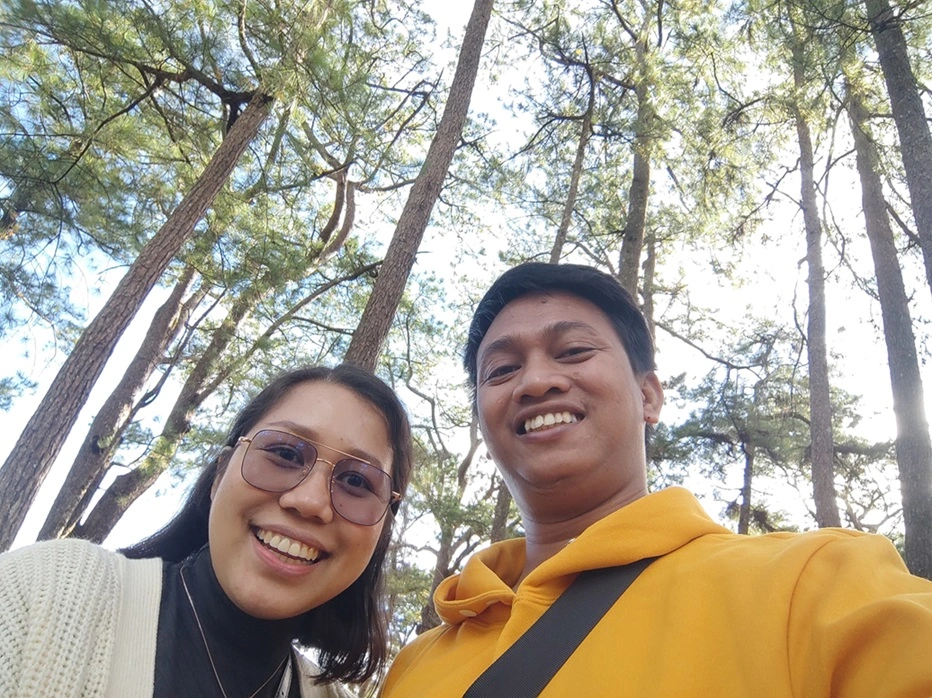

<div class="captured-moments">
  <div class="container">
    <div class="header-section"> 
      <div class="image-widget">
        
      </div>
      <div class="heading-widget">
        <h2>Captured Memories</h2>  
      </div>
      <div class="text-widget heading-text-widget">
        <p>
          Browse through these timeless treasures and embark on a journey down memory lane. Let the laughter, the tears, and the love captured in these images transport you back to that unforgettable day when two souls became one.
        </p>
      </div>
    </div> 
    <div class="section">
          
          
          
          
           
    </div>
  </div>
</div>